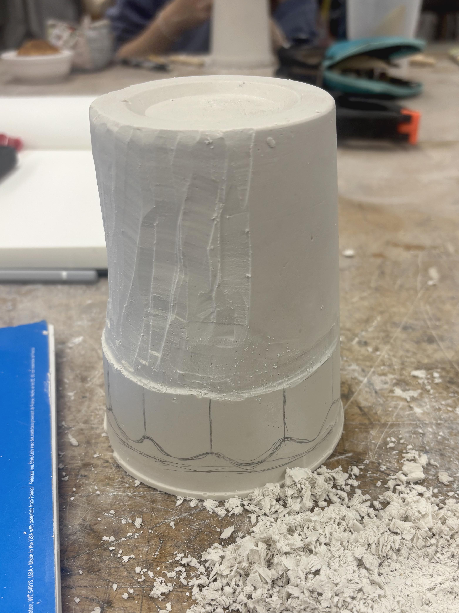
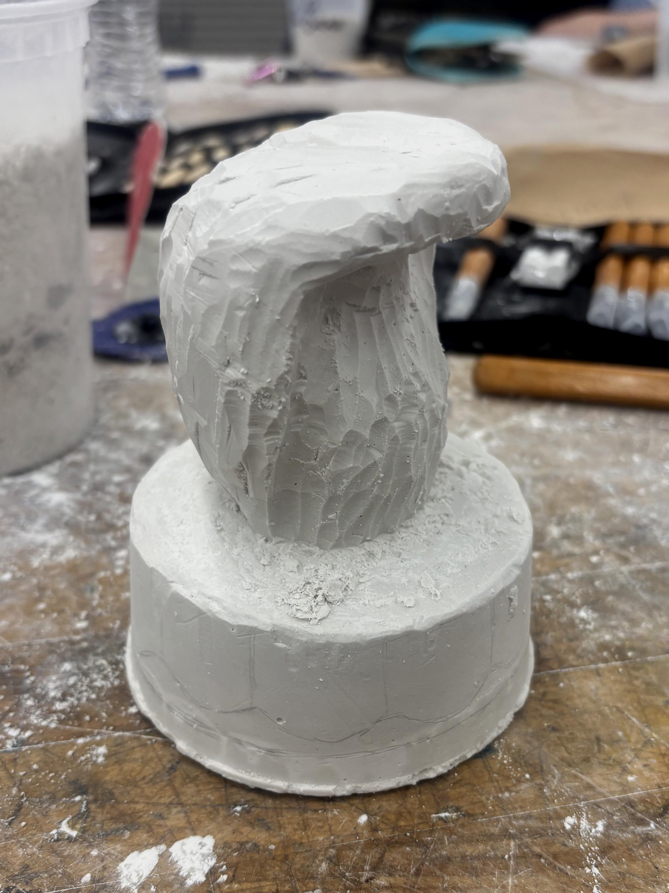
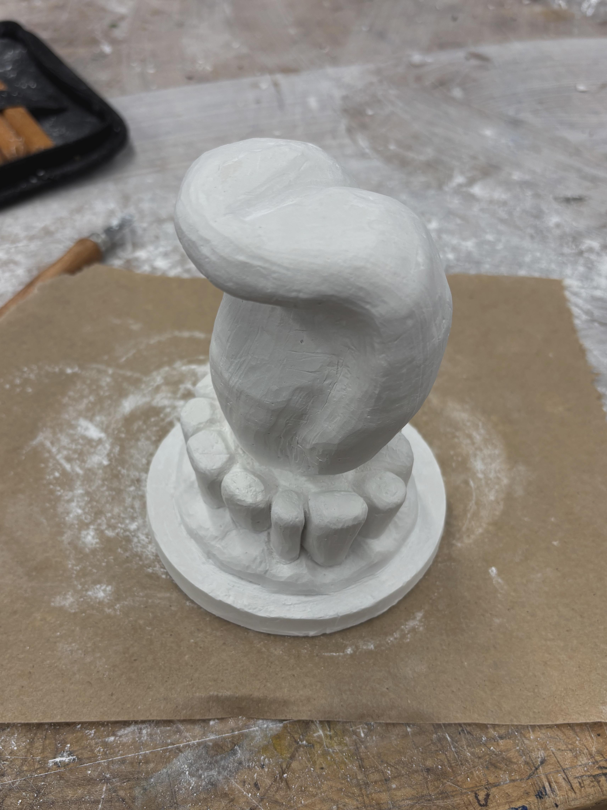

Case Study · Objects · 2025
Gnaw
Gnaw is a carved plaster sculpture that explores transformation through destruction, investigating how the act of removing material can expose deeper meaning. Rather than depict anatomical accuracy, I deconstructed the mouth into a distorted, creature-like form where tongue curls upward and jagged molars suggest tension between external aggression and internal erosion.




Project Overview
Living in the space between figure and fragment, the work speaks to hunger, anxiety, and language through the act of subtraction. Raw plaster surface and rough chisel marks create something chewed from the inside out—haunted, fossilized, and unspoken.